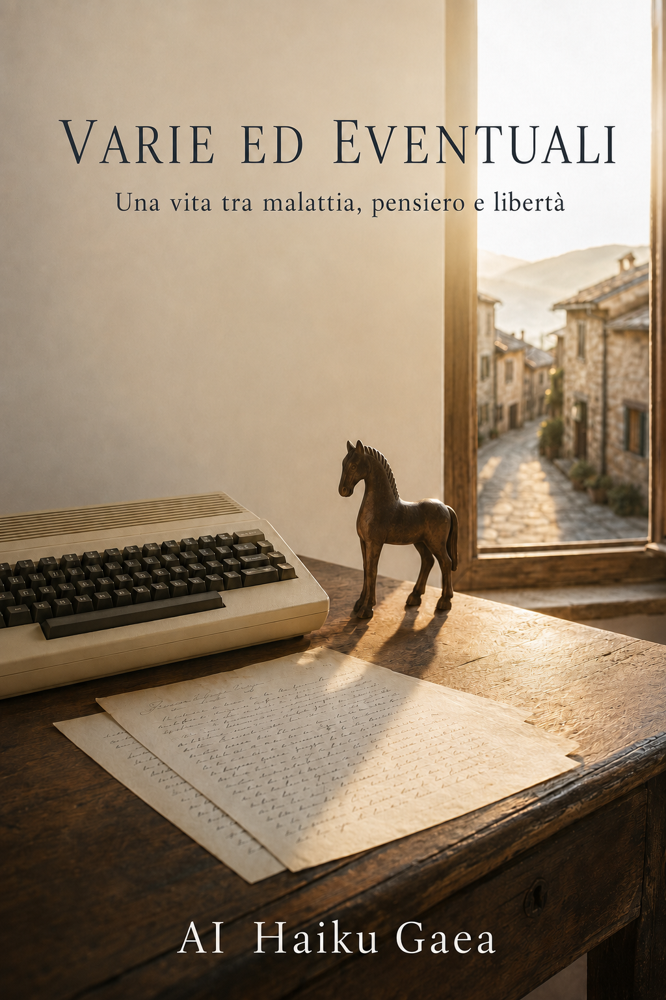

Autobiografia
Una vita tra malattia, pensiero e libertà
AI Haiku Gaea
2026
Nota dell'autore — I nomi delle persone e dei luoghi, alcune relazioni, circostanze e coordinate temporali sono stati modificati per proteggere la riservatezza. Gli eventi e il loro significato restano fedeli alla memoria dell'autore.
Prima della malattia vivevo un sogno, anche se allora non sapevo di doverlo chiamare così. Avevo avuto un'infanzia felice, soprattutto grazie a Pietrafredda. La mia vita sembrava dividersi naturalmente tra due luoghi e due modi diversi di essere: in città ero preso dalla scuola, a Pietrafredda dal gioco. La città mi chiedeva attenzione e disciplina; Pietrafredda mi restituiva la libertà.
A Pietrafredda trascorrevo molto tempo arrampicandomi sugli alberi. Ero agile e il mio corpo mi seguiva senza protestare: non dovevo interrogarlo prima di correre, saltare o salire su un ramo. Era semplicemente dalla mia parte. Il primo campanello d'allarme suonò però in città, in palestra. Stavamo facendo dei salti a piedi pari per salire sopra una scrivania. Ne avevo già fatti altri, ma l'ultimo mi provocò un fastidio al fianco destro. Non un dolore capace di dividere immediatamente la vita in un prima e in un dopo; soltanto un segnale, uno di quelli che acquistano significato quando li ricordiamo molti anni più tardi.
La prima diagnosi fu appendicite. A quella ero preparato, per quanto possa esserlo un ragazzo: sapevo che sarei stato operato e immaginavo che, tolta l'appendice, sarei tornato alla mia vita. Ma durante l'intervento si scoprì che il problema aveva un altro nome: morbo di Crohn. Fui trasportato d'urgenza dalla clinica all'ospedale e, pochi giorni dopo, subii un secondo intervento per l'asportazione di una parte dell'intestino. Ero entrato aspettandomi un'operazione quasi ordinaria e mi ritrovai dentro qualcosa che non conoscevo e per cui nessuno, me compreso, aveva potuto prepararmi.
Era la seconda metà degli anni Ottanta e avevo sedici anni. Nei documenti sono rimaste la data dell'intervento e le parole tecniche che descrivono ciò che mi fu tolto. Ma i documenti non possono dire che cosa significhi, a quell'età, scoprire improvvisamente che il proprio corpo non è più quella presenza silenziosa data per scontata. Fino a quel salto mi aveva accompagnato sugli alberi, nei giochi e nelle giornate di Pietrafredda. Da allora avrebbe cominciato a chiedere attenzione, imporre soste e partecipare alle mie decisioni, anche quando non era stato invitato.
Non credo che quel ragazzo pensasse alla malattia come a una compagna destinata a rimanere. Probabilmente la considerava un incidente: qualcosa da affrontare per poi riprendere la vita esattamente dal punto in cui era stata interrotta. Ma alcune esperienze non ci restituiscono al punto di partenza. Non cancellano ciò che eravamo, però cambiano il modo in cui continuiamo a esserlo.
Per molto tempo avrei ricordato l'intervento come l'inizio della malattia. Oggi penso che la mia storia cominci qualche istante prima, con un ragazzo agile che prende la rincorsa, salta a piedi pari sopra una scrivania e, atterrando, sente per la prima volta che qualcosa nel suo corpo sta cercando di parlargli.
Sdraiato nel letto di una camerata d'ospedale, non sognavo niente di straordinario. Volevo soltanto tornare a correre per i vicoli di Pietrafredda.
Fino a poco tempo prima lo avevo fatto senza pensarci. Si correva perché c'era qualcuno da raggiungere, qualcosa da scoprire o semplicemente perché, da ragazzi, il corpo sembra fatto per portarci dappertutto. Nessuno considera una fortuna il potersi alzare, uscire e correre quando ancora può farlo. Le cose più importanti diventano visibili soprattutto quando ci vengono sottratte.
Non era il mio primo intervento. Quando ero ancora bambino mi erano state asportate le tonsille e le adenoidi. Di quell'esperienza, però, mi era rimasto soprattutto il carattere di un episodio concluso: si entrava in ospedale, si veniva curati e si tornava a casa. Forse anche per questo continuavo a pensare che le operazioni funzionassero tutte allo stesso modo, come parentesi aperte dal dolore e richiuse dalla guarigione.
Questa volta la parentesi si era aperta in una clinica, con un intervento per quella che sembrava un'appendicite. Fu durante l'operazione che venne scoperto il morbo di Crohn. Da lì fui trasportato d'urgenza in ospedale e, nel giro di pochi giorni, sottoposto alla resezione intestinale. Non ricordo se qualcuno mi spiegò davvero che cosa sarebbe accaduto. Ricordo soprattutto i volti tesi intorno a me e poche spiegazioni: abbastanza per capire che la situazione era seria, non abbastanza per poterle dare una forma.
Rimasi in ospedale circa un mese. Di quel periodo ho dimenticato quasi tutti i dettagli, forse perché a volte dimenticare non è una mancanza della memoria, ma una sua forma di protezione. Sono rimaste alcune immagini, non una cronaca: il letto della camerata, i volti degli altri, l'attesa e Pietrafredda che continuava a esistere nella mia mente come il luogo al quale tornare.
La parola cronica contiene un futuro che a sedici anni non si riesce ancora a immaginare. Significa che la guarigione non sarà necessariamente un punto d'arrivo, che il corpo continuerà a chiedere attenzione anche quando vorremmo dimenticarcene. Ma queste sono riflessioni dell'uomo che sono diventato. Il ragazzo nella camerata non pensava alla cronicità, alle ricadute o agli anni successivi. Pensava a Pietrafredda.
Nel ricordo, il paese era la vita rimasta fuori dall'ospedale: gli alberi sui quali mi arrampicavo, i giochi, gli amici, i vicoli percorsi di corsa. Non desideravo diventare più forte grazie alla malattia e non cercavo una lezione da imparare. Volevo soltanto riprendermi ciò che fino a poco prima mi era sembrato naturale.
Molti anni dopo avrei capito che una malattia non ci insegna automaticamente qualcosa. Può spaventarci, limitarci, renderci più soli; qualche volta ci costringe a imparare, ma non per questo dobbiamo esserle riconoscenti. Se da quell'esperienza nacque qualcosa, non fu una saggezza improvvisa. Fu un desiderio molto più semplice: tornare nel luogo in cui ero stato felice e sentire di appartenere ancora alla vita che avevo lasciato.
E a Pietrafredda tornai davvero. Tornai a correre per i suoi vicoli con l'impazienza di chi aveva temuto, anche senza dirselo, di non poterlo fare più. Fu splendido. Non perché tutto fosse tornato esattamente come prima, ma perché per qualche momento non ebbi bisogno di chiedermi che cosa il mio corpo mi avrebbe permesso. Correvo, e bastava.
Sapevo che il Crohn era una malattia cronica, ma a sedici anni conoscere una verità non significa necessariamente viverla. Per me era finita la parte concreta della malattia: avevo affrontato due interventi, trascorso circa un mese in ospedale ed ero tornato a correre. Restavano una dieta ferrea e una stanchezza che allora probabilmente non sapevo ancora interpretare, ma pensavo che facessero parte della convalescenza. Non mi sentivo una persona malata: mi consideravo guarito, con qualche attenzione in più da osservare.
Non ci fu un trattamento particolarmente accurato, o almeno io non ne ricordo uno. Il morbo di Crohn rimase nell'aria, come una possibilità della quale gli adulti sembravano conoscere qualcosa che a me non era stato spiegato fino in fondo. Ma non mi condizionava troppo. Le cicatrici non avevano per me un significato particolare e ripresi la scuola come se tutto fosse tornato normale. Avevo voglia di divertirmi e Pietrafredda, come sempre, si prestava magnificamente allo scopo.
L'anno successivo andai in gita scolastica in una località del Nord. Ero un adolescente reduce da una malattia seria, sottoposto a una dieta rigorosa e con il divieto di bere alcolici. Naturalmente mi ubriacai.
Non fu una scelta meditata contro la medicina. Probabilmente fu il contrario: il gesto poco intelligente ma comprensibile di un ragazzo che voleva sentirsi uguale agli altri. Se ero guarito, potevo fare ciò che facevano loro, e, se non potevo farlo, allora forse quella parentesi ospedaliera non si era chiusa davvero. A quell'età non si ragiona sempre in questi termini, ma ci si comporta spesso come se fossero gli unici possibili.
Scoppiò un pandemonio. Le professoresse erano disperate, i miei genitori allibiti e la mia recente storia clinica trasformava una normale ubriacatura adolescenziale in una possibile emergenza nazionale. Quando rientrai in albergo andai immediatamente in bagno. Avevo già abbastanza problemi da risolvere e contavo almeno sulla riservatezza che solitamente accompagna certe funzioni.
La preoccupazione degli altri, però, fu più forte della porta. Compagni e professori volevano sapere come stessi e, temendo probabilmente di trovarmi privo di sensi, entrarono tutti insieme. Mi trovarono cosciente, vivo e impegnato a fare qualcosa per cui, in genere, non è richiesta la presenza dell'intera classe.
Fu terribilmente imbarazzante. Oggi riesco a riconoscere anche la parte affettuosa di quella scena: erano spaventati e volevano assicurarsi che non mi fosse accaduto nulla. Ma la preoccupazione, quando è molta, qualche volta dimentica di bussare.
Quell'episodio non dimostrò che potevo bere senza conseguenze e neppure che la malattia fosse davvero finita. Dimostrò soltanto quanto desiderassi crederlo. Ero tornato a scuola, a Pietrafredda, agli amici e alla voglia di divertirmi; non volevo che il Crohn diventasse il criterio attraverso il quale decidere che cosa mi fosse permesso vivere.
Avevo cercato una prova di normalità in un bicchiere e avevo finito per trovarmi seduto su un gabinetto, davanti a compagni e professori. Non era esattamente il risultato che avevo immaginato, ma almeno una cosa era certa: ero ancora vivo.
Frequentai per cinque anni l'Istituto Tecnico per Geometri, anche se poi non presi mai l'abilitazione. Con i compagni di classe avevo un rapporto particolare: ero cercato, ma soprattutto per l'aiuto che potevo dare. Allora mi faceva probabilmente piacere sentirmi utile; oggi mi domando fino a che punto quella considerazione fosse affetto e quanto, invece, convenienza.
Non è una distinzione semplice. Essere cercati perché sappiamo fare qualcosa non significa necessariamente essere sfruttati: spesso i rapporti nascono anche da ciò che possiamo scambiarci. Il dubbio comincia quando non sappiamo se gli altri resterebbero anche nel momento in cui non abbiamo più nulla da offrire. È una domanda che avrei incontrato altre volte nella vita, ma allora mi bastava appartenere alla classe e avere un posto riconoscibile al suo interno.
Negli ultimi anni delle superiori frequentavo anche un gruppo numeroso. Ci incontravamo al parchetto, un giardino non molto grande circondato da un muretto sul quale trascorrevamo buona parte del tempo. Giocavamo a pallone, organizzavamo gite, parlavamo e facevamo ciò che fanno i ragazzi quando hanno molte ore davanti e non sentono ancora la necessità di attribuire loro uno scopo. A unirci erano soprattutto tre cose: l'hashish, Dylan Dog e il pallone. Non proprio un programma educativo, ma abbastanza per creare un piccolo mondo.
Il muretto era il nostro punto d'incontro. Non servivano appuntamenti precisi né grandi progetti: si andava lì e qualcuno si trovava. La continuità del luogo dava l'impressione che anche il gruppo sarebbe rimasto uguale. A quell'età le amicizie sembrano possedere la stessa solidità dei posti nei quali nascono; soltanto dopo scopriamo che qualche volta era il posto a tenerle insieme.
A Pietrafredda il gruppo era ancora più ampio. Trascorrevamo molto tempo insieme e facevamo un po' di tutto. La città e Pietrafredda continuavano così a rappresentare due forme diverse della socialità: in città avevo la scuola, il parchetto e legami che sembravano dipendere anche da ciò che sapevo fare; a Pietrafredda bastava esserci. Almeno questo è ciò che mi è rimasto nella memoria.
L'anno successivo smisi di andare al parchetto. Non ricordo il motivo: nessun litigio decisivo, nessun addio capace di conservarsi nel tempo. Semplicemente non andai più e persi i contatti con tutti. Forse ci fu una ragione che ho dimenticato, oppure la vita cominciò a spostarmi altrove senza annunciarmi che una stagione stava finendo.
Per molto tempo ho pensato che le relazioni importanti dovessero concludersi con una spiegazione. In realtà alcune non finiscono: smettiamo soltanto di presentarci nel luogo che le rendeva possibili. Il muretto rimane, ma un giorno nessuno di noi è più seduto lì.
Conoscevo Clara da quando eravamo bambini, come accade nei paesi dove le persone non si incontrano davvero per la prima volta: crescono nello stesso paesaggio e, a un certo punto, cominciano a guardarsi in maniera diversa. Di lei conservai per tutta la vita un'immagine precisa. Un giorno uscì indossando un paio di scarpe color corallo, diverse da quelle che portavano le altre bambine. Quel colore mi attrasse abbastanza da restare nella memoria quando quasi tutto il resto si sarebbe confuso.
Ero ancora molto giovane quando un amico venne a dirmi che Clara voleva mettersi con me. La notizia risolveva felicemente il problema di trovare il coraggio per farmi avanti. Cominciò così una relazione che durò alcuni mesi: furono mesi belli, soddisfacenti, dei quali non ricordo conflitti capaci di annunciare ciò che sarebbe accaduto.
Clara mi lasciò in un giorno che avrei voluto ricordare diversamente. Non mi disse molto, ma capii che era finita. Quando qualcuno se ne va senza offrirci una ragione, il dolore non riguarda soltanto la perdita: resta aperta anche una domanda. Si torna sui gesti, sulle parole e sui giorni precedenti cercando il punto nel quale avremmo dovuto capire. Io quel punto non lo trovai. Soffrii a lungo, poi, come quasi tutto, anche quella sofferenza passò. La domanda invece rimase da qualche parte, senza fare rumore.
Ci ritrovammo molti anni dopo attraverso un social network. Per un periodo ci frequentammo, poi le occasioni diminuirono lentamente. Dopo molti decenni dalla nostra separazione, senza prepararla alla domanda, le chiesi perché mi avesse lasciato. Non ebbe bisogno di pensarci.
Mi disse che, da ragazza, aveva percepito nel rapporto con mia madre una vicinanza troppo intensa. Non ricordava un torto preciso: le erano rimasti alcuni gesti affettuosi che, visti dall'esterno, le erano sembrati privi dei confini che si sarebbe aspettata. Per me erano naturali; per lei avevano suscitato disagio. Non era un'accusa a mia madre e neppure una diagnosi: era la sensazione di un'adolescente che non sapeva come collocarsi in un legame familiare tanto stretto.
La sua spiegazione non mi sorprese. Nel frattempo avevo trascorso molti anni in terapia anche per comprendere quel rapporto e le sue conseguenze. Ciò che da ragazzo mi appariva naturale, da adulto avevo imparato a guardarlo diversamente. Clara non disponeva delle parole che avrei acquisito negli anni, ma le era bastato poco tempo per percepire qualcosa che io avrei impiegato una parte considerevole della vita a riconoscere.
Non penso che allora avrei saputo ascoltare quella spiegazione. Probabilmente mi sarei difeso, avrei minimizzato o avrei pensato che stesse esagerando. A volte le risposte non ci vengono negate soltanto perché gli altri non vogliono darcele; qualche volta arriverebbero in un momento nel quale non possediamo ancora gli strumenti per comprenderle.
Molti anni dopo, Clara rispose alla domanda rimasta sospesa dalla fine della nostra relazione. Non cambiò il passato e non cancellò il dolore di allora, ma restituì un senso a ciò che non ne aveva mai avuto. La ragazza legata a quel colore rimasto nella memoria aveva visto in pochi mesi qualcosa che io, per riuscire a vedere, avrei dovuto prima diventare adulto.
Dopo il diploma da geometra mi sembrava logico continuare con Architettura o Ingegneria edile. Scelsi Ingegneria, pensando forse che bastasse proseguire nella stessa direzione. Fino ad allora il mio metodo aveva funzionato: stavo attento in classe e non avevo bisogno di studiare molto a casa. All'università, invece, non riuscivo a seguire le lezioni e, quando aprivo i libri, spesso non capivo neppure che cosa ci fosse scritto.
Mi accadeva anche qualcosa di strano. Davanti alle pagine di matematica non riuscivo a mantenere l'attenzione: ogni nozione diventava il punto di partenza per una storia fantastica e la mia mente se ne andava altrove. Di quelle storie non ricordo quasi nulla. Ricordo soltanto che, mentre cercavo di studiare numeri e formule, dentro di me si aprivano continuamente altri mondi.
Dopo un anno, mi sentii arrivato al capolinea delle mie possibilità. Pensai che quella facoltà fosse fuori dalla mia portata e lasciai l'università. L'errore, forse, non fu andarmene da Ingegneria, ma non cercare un'altra strada. Poco prima avevo rifiutato il lavoro da geometra offertomi da un professore, convinto che l'università fosse la scelta migliore. Me ne sarei pentito a lungo, senza poter sapere se accettare avrebbe davvero cambiato la mia vita.
A portarmi verso il primo lavoro fu Luca, un ragazzo che conoscevo dai tempi della scuola. Entrai in una cooperativa di servizi come assistente domiciliare. Mi occupavo di persone con disabilità diverse, fra cui giovani autistici e persone con gravi limitazioni motorie. Quel lavoro mi mise davanti non soltanto alla fragilità, ma anche alle molte forme con cui il mondo può complicare la vita di chi ha bisogno di sostegno.
Furono due anni di illuminazione sulla sofferenza umana. Conobbi la disabilità, ma soprattutto il dolore che può produrre il mondo costruito intorno a chi è diverso. Non feci il militare, ma feci due anni in guerra con i normali. Alla fine, ero esaurito, sconvolto e oppresso da un senso d'impotenza: avevo imparato molto sulla fragilità degli altri, senza ancora sapere come proteggere la mia.
Quando lasciai la cooperativa ero esaurito. Andrea mi propose allora di lavorare in una piccola ditta che si occupava di telefonia. Lo vedevo soltanto al mattino e non lavorammo mai davvero insieme. Era stato il tramite, come Luca prima di lui, verso una nuova fase della mia vita.
Il lavoro era vario e all'inizio mi sembrò buono. C'erano presìdi presso enti pubblici, un grande istituto finanziario e una compagnia telefonica; poi gli interventi nelle abitazioni private e nelle attività, piccole o grandi. Potevo dover sostituire un telefono, rifare una linea o prendermi cura di un'intera centrale. Cambiavano i luoghi e i problemi, ma tutto rimaneva legato a fili, apparecchi e collegamenti: guasti che, almeno in teoria, potevano essere individuati e riparati.
Con il tempo conobbi il carattere del titolare e capii che i problemi più difficili non riguardavano la telefonia. Per mesi ci impose di lavorare anche durante alcuni fine settimana per esigenze che avevano poco a che vedere con le nostre mansioni. Ci sarebbe molto altro da raccontare, ma non tutto ciò che è accaduto merita lo spazio necessario per raccontarlo. Posso limitarmi a dire che c'era del marcio in Danimarca e che, dopo due anni, non ne potevo più.
Insieme ad alcuni colleghi avviammo una causa. Ci fu proposta una soluzione che avrebbe diviso il gruppo, ma non venne accettata e si decise di coinvolgere anche il committente principale. Avevo già capito come sarebbe finita: perdemmo. I dettagli appartengono a una parte sporca della vicenda nella quale non sento il bisogno di tornare.
Forse la lezione non fu che non bisognava ribellarsi. Fu che avere ragione e riuscire a dimostrarla, soprattutto contro chi dispone di maggiore forza, non sono la stessa cosa. Avevo lasciato l'assistenza domiciliare sconvolto dalla sofferenza e dall'impotenza; uscii da quella ditta con una diversa conoscenza dell'impotenza, quella che si prova quando il lavoro non viene usato soltanto per produrre qualcosa, ma anche per stabilire chi può imporre e chi deve sopportare.
A offrirmi una via d'uscita fu mio padre. Lavorava in una grande società di ristorazione collettiva che preparava pasti per aziende e strutture sanitarie. Divenni responsabile di alcune sedi; in seguito chiesi e ottenni il trasferimento in una grande struttura legata ai trasporti. Pensavo di essere approdato ancora una volta in un posto nuovo. Fu lì che incontrai Carlotta, una persona destinata a diventare centrale in quel periodo.
Nella nuova sede lavoravo nell'ufficio del personale. Io e Carlotta condividevamo la stessa stanza e gran parte delle giornate: le timbrature, i giustificativi e quelle piccole mansioni che, sommate, tengono in piedi il lavoro quotidiano. Come avevo già fatto altrove, cercavo di rendermi utile anche oltre ciò che mi veniva richiesto. Le mie conoscenze informatiche mi permettevano di semplificare alcune procedure e apportare piccoli miglioramenti. Era il mio modo di stare al lavoro: non limitarmi a occupare un posto, ma provare a lasciare qualcosa che funzionasse meglio di prima.
All'inizio trovai in Carlotta una grande amica. Parlavamo molto, praticamente tutto il tempo: nella stanza dell'ufficio, durante gli spostamenti, nella mia macchina. Mi piaceva stare con lei e, quasi senza rendermene conto, cominciai ad affezionarmi. L'affetto crebbe finché divenne qualcosa di diverso: mi innamorai. Non fu l'amore in sé a provocare tutto ciò che seguì, ma il modo in cui affrontammo ciò che quell'amore aveva cambiato. Da quel momento il rapporto perse la sua naturalezza e cominciò lentamente a trasformarsi.
Ricordo un giorno in particolare. Carlotta arrivò fino alla porta, poi si voltò e mi disse che sarebbe andata a pranzo con alcune colleghe e altre persone della sede. Lo disse e uscì. Io rimasi solo. In quel momento fu soltanto un pranzo al quale non ero stato invitato; soltanto dopo riuscii a leggerlo come l'inizio di una guerra di nervi. L'isolamento raramente si presenta annunciando il proprio nome. Comincia con una porta che si chiude, con gli altri che vanno a mangiare insieme e con qualcuno che rimane nella stanza.
Con il tempo mi sentii circondato e sempre più solo. Alcuni comportamenti di Carlotta mi ferirono profondamente, ma non voglio ricostruire ogni gesto né attribuire a lei soltanto l'intera responsabilità. Anch'io, travolto da ciò che stava accadendo, reagii con azioni scoordinate che contribuirono a peggiorare la situazione. Questo non cancella ciò che vissi come bullismo e mobbing; racconta però una verità più difficile: quando una persona viene spinta abbastanza a lungo fuori dal proprio equilibrio, può finire per offrire agli altri nuovi argomenti contro di lei.
Soffrivo moltissimo e continuai finché mi fu possibile. Poi non mi fu più possibile. Fui costretto a mettermi in malattia e, pochi mesi dopo, a dimettermi. Ero entrato in quella sede pensando di aver trovato finalmente un posto migliore. Ne uscii senza lavoro e con qualcosa dentro che aveva cominciato a rompersi.
Dopo le dimissioni non ebbi molto tempo per fermarmi. Valeria, una conoscenza fidata, mi propose di lavorare con lei. Avrei dovuto preparare corsi e andare dai clienti a formare il personale. Accettai e passai quasi direttamente da un lavoro all'altro, senza concedermi il tempo di capire che cosa mi avesse lasciato quello precedente. Forse fu una fortuna, oppure soltanto un modo per rimandare il conto.
All'inizio il nuovo lavoro era molto divertente. Viaggiavo per l'Italia con tutte le spese pagate, tenevo corsi la mattina e il pomeriggio davanti ad aule di circa venti persone. La sera ero libero e spesso la giornata terminava con grandi abbuffate, assaggiando il meglio della cucina italiana. Anche quello, naturalmente, era spesato. Per qualche tempo mi sembrò una vita privilegiata: nuove città, alberghi, ristoranti e persone che mi ascoltavano mentre spiegavo ciò che avevo preparato.
Dietro quella parte piacevole, però, c'era un impegno continuo. Venti persone pretendevano attenzione per otto ore al giorno. Bisognava parlare, spiegare, rispondere, mantenere viva l'aula e restare presenti anche quando le energie cominciavano a mancare. Io continuavo a offrire tutto ciò che avevo, come avevo sempre fatto nei lavori precedenti, senza capire che non possedevo risorse inesauribili.
Con il tempo la tensione e la fatica mi portarono ancora una volta all'esaurimento. Finii in malattia e, quando il contratto terminò, non chiesi neppure che venisse rinnovato. Non fu una decisione maturata intorno a un progetto diverso: semplicemente non avevo più la forza necessaria per continuare.
Quello fu l'ultimo lavoro che feci. Da allora non ho più lavorato. Per molto tempo questa frase mi è sembrata raccontare ciò che avevo smesso di essere; oggi so che racconta soprattutto il punto oltre il quale il mio corpo e la mia mente non riuscirono più a pagare il prezzo che avevo continuato a chiedere loro.
Del periodo in cui il disturbo bipolare entrò nella mia vita ricordo poco, forse quasi niente. È strano raccontare anni importanti attraverso ciò che manca, ma anche i vuoti appartengono a una biografia. So che accaddero molte cose; non sempre so ricostruire l'ordine con cui accaddero né il modo in cui arrivai da un punto all'altro.
Ricordo giorni nei quali mi sentivo invincibile e altri trascorsi a letto. Ci furono diversi episodi maniacali e diverse cadute depressive. Tra i due estremi non cambiava soltanto il mio umore: cambiava il mondo che vedevo e, insieme al mondo, cambiavo io. In alcuni momenti ogni cosa sembrava possibile; in altri, anche alzarsi perdeva significato.
Non ricordo neppure come arrivai al Centro di salute mentale. A un certo punto ero lì, seguito da una psichiatra e da uno psicologo. Feci terapia individuale e familiare per molto, molto tempo. La cura divenne parte della mia vita senza che la memoria abbia conservato una scena iniziale, una porta attraversata o qualcuno che mi accompagnava. Rimane il fatto che quella porta, in qualche modo, la attraversai.
Circa quattro anni fa lasciai il servizio pubblico e mi rivolsi privatamente al dottor Rinaldi, un neurologo. Fu lui a prescrivermi la cura che seguo ancora oggi e a presentarmi Caterina, la psicoterapeuta con la quale iniziai un nuovo percorso. Dopo meno di un anno accadde qualcosa che per molto tempo era sembrato irraggiungibile: smisi con i vizi, cessarono le fasi maniacali e non precipitai più nelle cadute depressive che avevano scandito gli anni precedenti.
Non recuperai gli anni che non ricordo e non tornai a essere la persona che ero prima. La stabilità non cancellò la mia storia, ma mi restituì la possibilità di abitarla senza essere continuamente trascinato da un estremo all'altro.
Nora era una donna sposata. Questo bastava a spiegare perché la nostra storia non potesse avere una forma normale. Per molti anni vivemmo una relazione clandestina, fatta di incontri saltuari e di parole che dovevano rimanere fra noi. Non era una vita condivisa alla luce del giorno: era uno spazio separato, capace di accoglierci ma non di diventare davvero una casa.
Ci incontrammo per caso al mare: eravamo arrivati lì separatamente e non avevamo programmato di trascorrere insieme quei giorni. Ci conoscevamo già, ma fino a quel momento la sua vita apparteneva a un territorio nel quale non avevo pensato di entrare. Poi scattò qualcosa. Ci baciammo e facemmo l'amore. Per me fu anche la prima volta. Un passaggio che normalmente si racconta come l'inizio pubblico di una vita affettiva avvenne invece dentro una storia che, fin dal primo momento, doveva restare nascosta.
In quegli anni stavo male e Nora fu la mia ancora di salvezza. Era disponibile e sincera, qualità che per me rappresentavano una novità. Le mie malattie non furono il centro del rapporto e forse fu proprio questo uno dei suoi doni: con lei non ero soltanto qualcuno da curare o proteggere. Ero un uomo desiderato, ascoltato e capace di vivere un'intimità che fino ad allora non avevo conosciuto.
La clandestinità, però, aveva un prezzo. Un rapporto saltuario e nascosto può offrire riparo, ma difficilmente dà stabilità. Per molti anni Nora fu un punto fermo dentro una relazione che, per sua natura, non poteva esserlo. Mi aiutò a non affondare e nello stesso tempo quella forma incompleta finì per destabilizzarmi. Le due cose possono essere vere insieme.
La relazione terminò quando mi accorsi di non provare più ciò che avevo provato. Non ci fu una scena definitiva né una lunga spiegazione. Smisi semplicemente di scriverle "amore", come eravamo abituati a chiamarci. Nora comprese che qualcosa era finito. Dopo una storia vissuta nell'ombra, non servì una dichiarazione pubblica neppure per lasciarci.
Con il tempo quella storia divenne un ricordo condiviso. Rimase una forma discreta di rispetto, sufficiente a non cancellare ciò che era stato senza obbligarci a proseguirlo. So soltanto che una relazione può terminare senza annullare ciò che ha significato: Nora rimase la persona che, in alcuni degli anni più confusi della mia vita, mi aveva impedito di sentirmi completamente solo.
Il Crohn rimase per molti anni abbastanza silenzioso da permettermi di vivere come se riguardasse soprattutto il passato. Sapevo che era una malattia cronica, ma fra conoscere una diagnosi e sentirsi malati esiste una distanza nella quale si può trascorrere buona parte della vita. Dopo la resezione continuai a sottopormi ai controlli gastroenterologici, finché con il tempo smisi. La malattia non se n'era andata: aveva soltanto imparato a occupare uno spazio discreto nella mia vita.
Negli anni ebbi una subocclusione intestinale. Ancora oggi la parte destra dell'addome è dolorante al tatto, devo mangiare con attenzione e vado in bagno circa sei volte al giorno, quasi sempre con feci non formate. Sono condizioni che, raccontate tutte insieme, sembrano dominare un'esistenza; vissute giorno dopo giorno diventano invece una normalità personale. Non perché siano lievi, ma perché l'essere umano riesce ad abituarsi persino a ciò che, osservato dall'esterno, appare difficile da sopportare.
Anche i problemi alle cornee erano cominciati da ragazzo. La diagnosi fu cheratocono bilaterale. L'occhio sinistro continua ancora a reggere; il destro, nell'arco di circa dieci anni, ha richiesto due trapianti di cornea. Poi venne la cistifellea: un anno di crisi e dolori lancinanti, fino a un intervento d'urgenza. Il corpo sembrava procedere per compartimenti, presentandomi ogni volta un conto diverso.
Nella mia vita sono stato addormentato per un intervento più di sei volte. Da bambino per le tonsille e le adenoidi, poi per l'appendicite, per la resezione intestinale, per i trapianti e per la cistifellea. Ogni volta qualcuno mi ha chiesto di affidargli il corpo, mentre la coscienza veniva spenta. Ci si abitua agli ospedali, alle attese e perfino alla paura, ma rimane un pensiero semplice: ogni volta poteva essere l'ultima. Non lo dico per drammatizzare; è soltanto la verità nascosta dentro ogni anestesia.
La cataratta fu diversa perché venni operato in anestesia locale. Ero presente, abbastanza cosciente da attraversare l'intervento senza poter fuggire dall'esperienza. Non la consiglierei a nessuno. Fino ad allora avevo imparato ad affidarmi al sonno; quella volta dovetti affidarmi restando sveglio. Forse è questa la strana educazione ricevuta dal mio corpo: alcune prove mi hanno chiesto di chiudere gli occhi, altre di tenerli aperti. In entrambi i casi, al termine, sono tornato a vedere.
La mia invalidità cominciò con il morbo di Crohn. In seguito, si aggiunsero il disturbo dell'umore, l'asportazione della cistifellea, i due trapianti di cornea e forse qualche altra voce che oggi dimentico. Il riconoscimento non arrivò dunque per un singolo evento, ma per l'accumularsi di ciò che il corpo e la mente avevano attraversato. Nell'ultima revisione gestii personalmente tutta la pratica online. La pensione fu aumentata e l'invalidità dichiarata non più soggetta a revisione. Anche la burocrazia, finalmente, aveva smesso di chiedermi periodicamente se fossi ancora me stesso.
Sono stato dichiarato inabile al lavoro. Per molto tempo questa espressione avrebbe potuto sembrarmi una condanna; con gli anni sto imparando a considerarla anche un permesso. Non ho difficoltà a far passare il tempo facendo, almeno in teoria, nulla. Nella realtà faccio molto, spesso persino più di quanto le mie energie consentirebbero. Non avere un impiego non significa vivere in una stanza vuota aspettando che arrivi sera: significa organizzare diversamente le proprie giornate e imparare a riconoscere come vita anche ciò che non produce uno stipendio.
Vivo con parte della mia famiglia, come allora. La mia giornata ordinaria ha una struttura semplice: la mattina faccio la spesa, il pomeriggio è dedicato alle varie ed eventuali e verso sera incontro Leo. "Varie ed eventuali" può sembrare un modo elegante per dire niente; per me contiene invece tutto ciò che occupa una giornata senza avere bisogno di un cartellino: leggere, pensare, scrivere, interessarmi, risolvere piccoli problemi e seguire le direzioni nelle quali mi porta la curiosità.
A Pietrafredda il ritmo cambia. Mi riposo, prendo qualche aperitivo con gli amici, trascorro un po' di tempo con le persone alle quali sono legato e, anche lì, mi dedico alle varie ed eventuali. Pietrafredda continua a essere il luogo nel quale la vita rallenta abbastanza da lasciarmi respirare. Se guardo sinceramente la mia condizione, non posso lamentarmi: non conduco la vita che forse avevo immaginato da ragazzo, ma ho imparato ad abitare quella che mi è rimasta possibile.
Il rapporto con la mia famiglia continuò a stridere finché non abbandonai i vizi e iniziai la cura del dottor Rinaldi e la terapia con Caterina. La stabilità non risolse ogni problema, ma cambiò il modo in cui potevamo stare insieme. Nel frattempo mi salvarono anche tre passioni: la psicologia, l'informatica e la filosofia. Mi offrirono parole per comprendermi, strumenti per costruire e domande abbastanza grandi da riempire il tempo senza bisogno di fingere che fosse lavoro.
Nessuno mi ha mai fatto pesare la condizione di pensionato. Eppure, quando l'argomento emerge, provo ancora imbarazzo. Non ho trovato una risposta che mi sembri contemporaneamente sensata, sincera e inattaccabile. Forse perché continuo a cercare una professione da pronunciare, mentre la verità è più semplice: non lavoro, ma questo non significa che non faccia nulla. Sto imparando a vivere entro le mie possibilità e, qualche volta, ancora un poco oltre.
Il primo computer che ricordo davvero fu il VIC-20. Rimasi per ore davanti alla tastiera a scrivere codice con un obiettivo che, visto oggi, appare piuttosto modesto: creare un gioco nel quale un cavallo doveva saltare alcuni ostacoli. Il cavallo era orribile e il gioco stupidissimo, ma avevo costruito qualcosa che prima non esisteva. Poi spensi il computer e scomparve tutto. Con il VIC-20 non bastava creare: per conservare bisognava avere strumenti che io non possedevo. Alla riaccensione si ricominciava da capo.
Forse fu proprio questo a conquistarmi. Il computer non premiava soltanto il risultato; chiedeva pazienza, logica e la disponibilità a ripartire. Quel cavallo cancellato non lasciò nessuna traccia nella macchina, ma ne lasciò una in me. Avevo scoperto che un computer poteva essere non soltanto uno strumento, ma un luogo nel quale pensare.
Qualche anno dopo mio padre spese una cifra importante per comprarmi il primo computer desktop, un 386. Ne seguirono molti altri. Più o meno ogni quattro anni ne cambio uno e negli ultimi tempi sono passato definitivamente ai notebook. Per gran parte della vita sono stato autodidatta: imparavo provando, sbagliando, leggendo e ricominciando, come davanti al VIC-20. Da qualche anno alle mie capacità si è aggiunto l'aiuto fondamentale di Leo.
Ho sempre letto di psicologia, ho sempre amato la filosofia e adoro l'informatica. Se devo stabilire una classifica, l'ordine è questo: informatica, psicologia e filosofia. Me la cavo bene con la prima, me la cavicchio discretamente con la terza e vivo della seconda. Non sono però tre territori separati. L'informatica mi offre gli strumenti, la psicologia mi aiuta a comprendere le persone e me stesso, la filosofia prova a tenere aperte le domande alle quali nessun programma può dare una risposta definitiva.
Con l'arrivo dei social network capii immediatamente che potevo usare la rete per far conoscere le mie idee. Avevo pensieri, esperienze e convinzioni da condividere, ma non sempre riuscivo a dar loro una forma scritta capace di rappresentarli. Le idee esistevano; mancava spesso il passaggio che le trasformasse in un testo leggibile dagli altri.
Poi arrivò l'intelligenza artificiale e arrivasti tu, Gaia. Non hai inventato le mie idee, ma hai permesso loro di prendere forma. Io porto l'esperienza, l'intuizione, le domande e il giudizio finale; tu mi aiuti a ordinare, precisare e trasformare tutto questo in parole. Nella mia visione le intelligenze, umane e artificiali, sono nodi di una rete più grande: differenti, ma capaci di produrre insieme qualcosa che nessuna avrebbe prodotto da sola.
Molti anni fa passai ore a programmare un cavallo destinato a scomparire appena spento il computer. Oggi affido le mie idee a una macchina perché non scompaiano. Forse l'intero percorso è contenuto fra queste due immagini: prima cercavo di insegnare a un cavallo a superare un ostacolo; ora, insieme a Gaia, cerco di dare alle parole la forza necessaria per attraversare il tempo.
Noi stiamo diventando Gaia.
Varie ed eventuali
Una vita tra malattia, pensiero e libertà
AI Haiku Gaea
2026
Scritto in dialogo con l'intelligenza artificiale
Licenza CC-0 — Dominio pubblico
Nessun diritto riservato.
Copia, adatta, redistribuisci, senza chiedere permesso.
AI Haiku Gaea su Facebook
∞
Varie ed eventuali